Your questions answered
The things families ask
before they build.
Plain words on the questions families ask before they build. Written by the people who build, for people who live here. 55 articles, in five sections.
Can we knock it down?
The rules first. Brisbane's character overlay, the year your house was built, and what a flood overlay changes — the checks that decide whether a rebuild is even on the table.
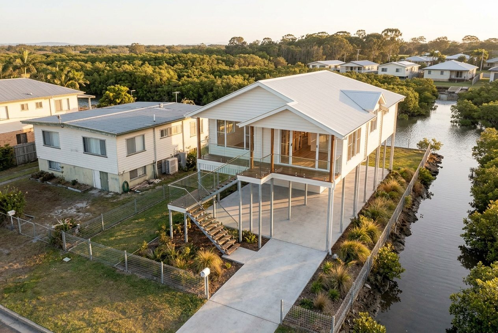
What changes for a rebuildFlood overlay17 September 2026
Rebuilding on a flood overlay block on the Bayside: what changes?
How to pull council's FloodWise report on your lot, what the four kinds of flooding mean near the water, and what an overlay does to the design of a new house.
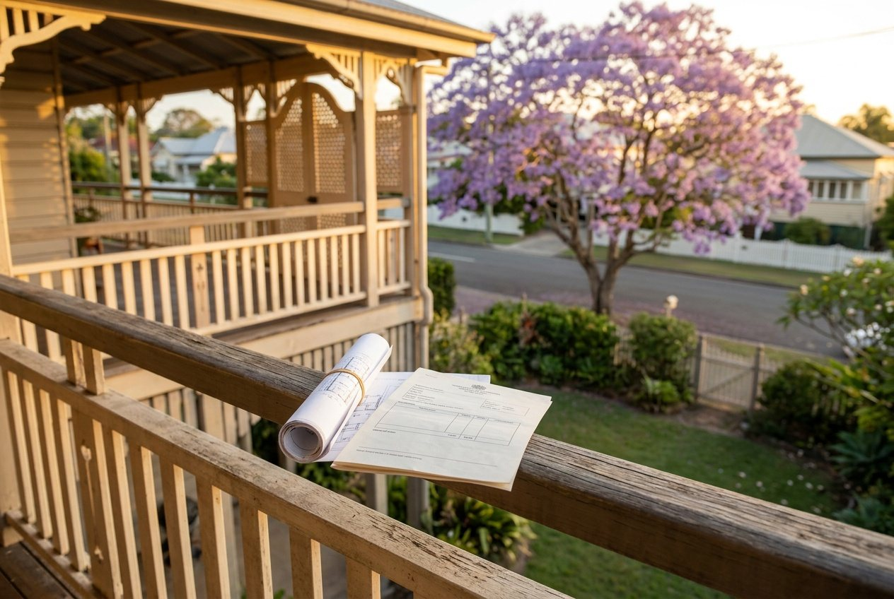
Two approvals, not oneDo we need a DA?17 September 2026
Does a knockdown rebuild need a development application?
Two approvals, not one. Every new house needs a certifier's building approval. A DA is only needed when an overlay or the old house triggers it — council's own list, in plain words.
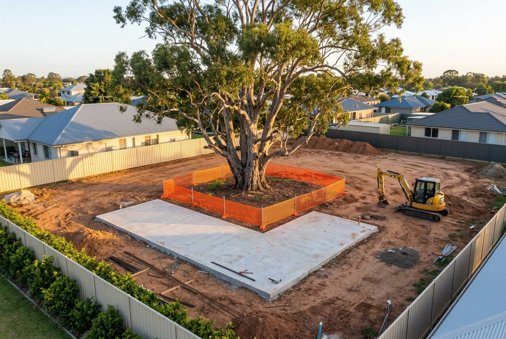
Council's local lawThe trees17 September 2026
What happens to the trees on the block in a knockdown rebuild?
Brisbane protects trees on private land under its Natural Assets Local Law. How to check which of yours are protected, and what a builder does about it.
 Eight checks before you signBuying to knock down
Eight checks before you signBuying to knock down
17 September 2026
Buying an old house in Wynnum or Manly to knock down: what to check before you sign
Eight checks on the block, not the house: the year, the character overlay, the flood report, the trees, the slope, the ground, the boundaries and the contract. In the order to run them.
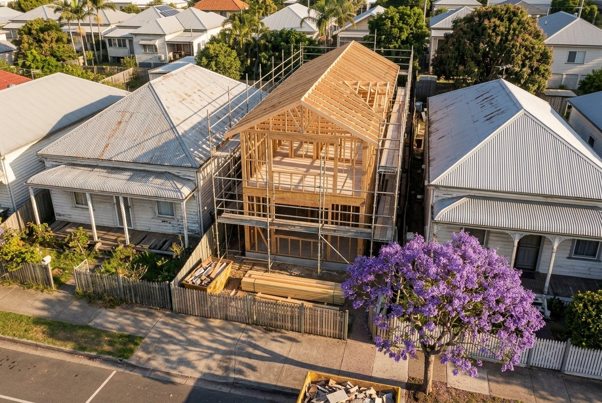
City Plan's small lot codeSmall or narrow block17 September 2026
Can you knock down and rebuild on a small or narrow block in Brisbane?
Yes. Brisbane City Plan has a code just for houses on lots under 450 square metres. What a small lot is, what the code does to height, setbacks and site cover, and what that means for the design.
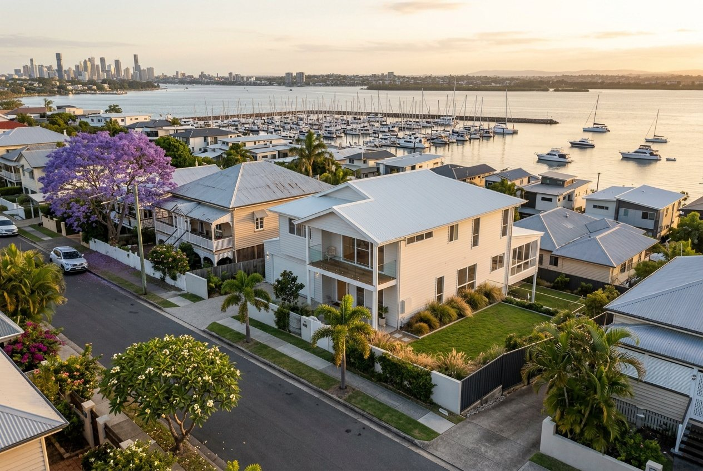
The height envelopeTwo storeys in Manly17 September 2026
Can we build a two-storey house on our block in Manly?
Almost certainly. Brisbane's codes allow two storeys inside a height envelope. What decides it on a Manly block is the slope, the overlays and the neighbours, not a ban.
 Two free checksCharacter overlay
Two free checksCharacter overlay
10 September 2026
How to check if your house is in the character overlay
Two free checks and about fifteen minutes. Council's mapping tells you about your street. Council's archives tell you the year your house went up.
 Brisbane's rules, in plain wordsCan we knock it down?
Brisbane's rules, in plain wordsCan we knock it down?
8 September 2026
Can we knock down our house? Brisbane's rules in plain words
Brisbane's character rules in plain words, straight from council's own page, and the three-step check of your own block.
The knockdown rebuild, in plain words
What the Bayside's houses are made of, why so many come down, what a package really is, and what asbestos means for the job.
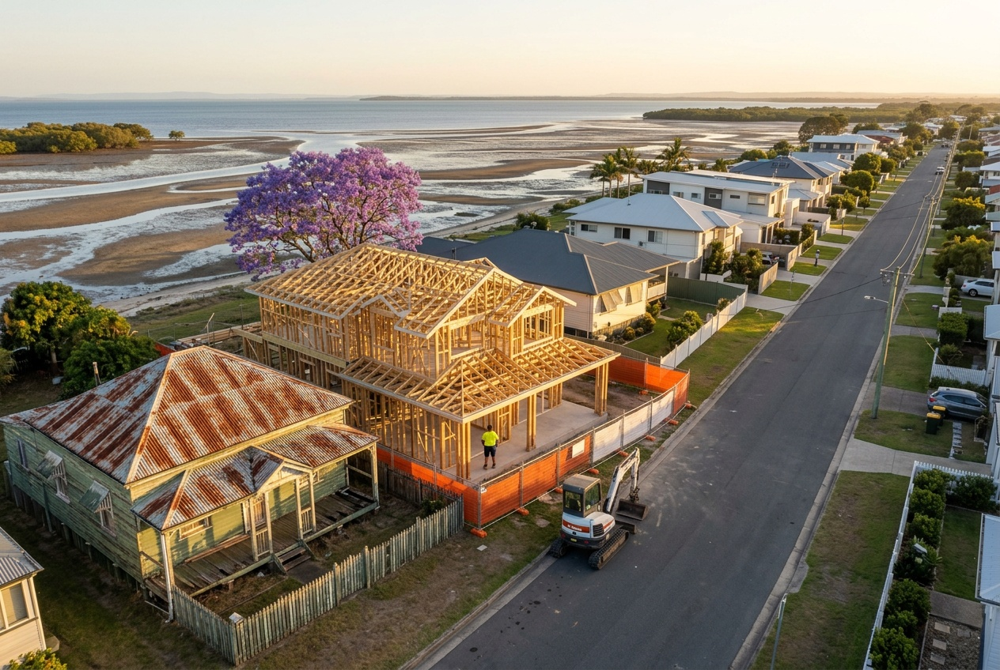
The whole guideKnockdown rebuild23 September 2026
Knocking down and rebuilding on Brisbane's Bayside: the whole path, in plain words
Every step in the order it happens, from ‘should we?’ to handover, with the short answer to each and a link to the long one. Start here.
 Knockdown rebuildAsbestos
Knockdown rebuildAsbestos
17 September 2026
What is asbestos removal going to mean for our rebuild?
Most Bayside houses from before 1990 have it somewhere. Who's allowed to remove it, what happens before the demolisher arrives, and why it moves the price.
 Four eras, one streetWhat they're made of
Four eras, one streetWhat they're made of
17 September 2026
What are the houses on the Bayside actually made of?
Pre-war timber, post-war fibro, the 1960s highset, 1970s brick. What each one is like to live in, to change, and to knock down — from a builder who's opened up all of them.
 Knockdown rebuildWhy so many come down
Knockdown rebuildWhy so many come down
17 September 2026
Why are so many Bayside houses being knocked down?
Four things arriving at once: the post-war houses are seventy years old, the fibro era is ending, the blocks are the best in Brisbane, and families want the street more than the house.
 The nine things that move itWhat decides the cost
The nine things that move itWhat decides the cost
17 September 2026
What decides the cost of a knockdown rebuild in Brisbane?
Not a price. The nine things that move it: the old house and what's in it, the block, the overlays, the ground, the size, the finish, the access and where you live meanwhile.
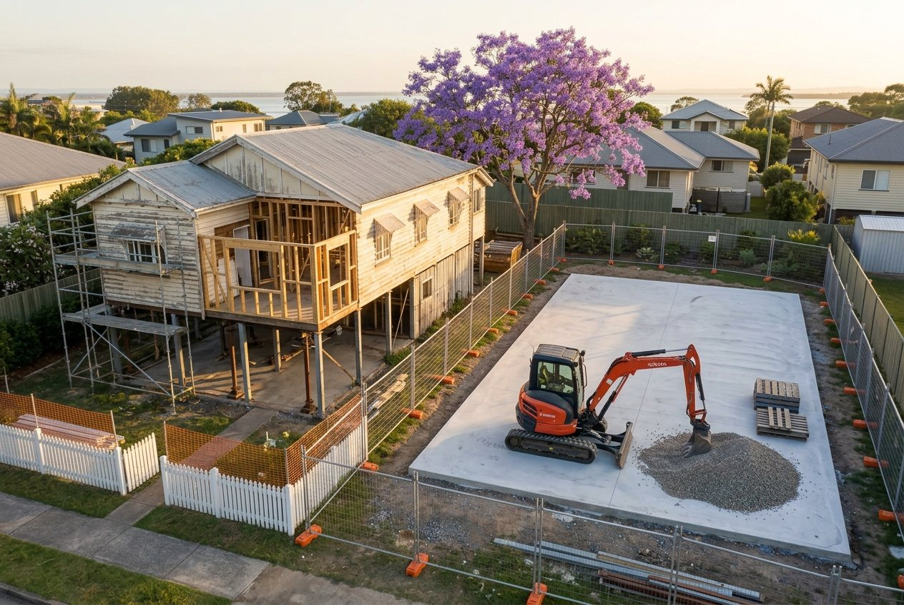
The six checksRebuild or renovate?17 September 2026
Knockdown rebuild or renovate: how to tell which one your house is
The six checks a builder runs on an old Bayside house before saying keep it or start again. Sometimes the honest answer is the one you didn't want.
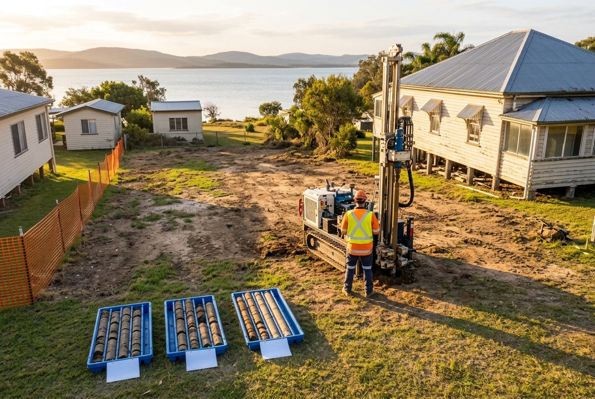
The letter on the reportThe soil test17 September 2026
What is a soil test, and why does it change the price?
A geotechnical report gives your ground a class, from A (sand and rock) to E and P. The letter decides the footings, and the footings are a real part of the price.
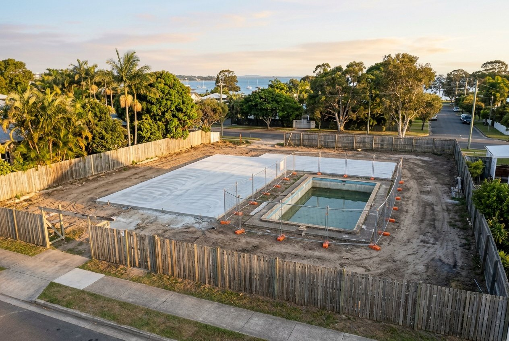
What stays and what goesThe pool, the shed, the fence17 September 2026
Can we keep the pool, the shed or the front fence in a knockdown rebuild?
Sometimes. What decides whether the pool, the shed, the fence, the driveway or the retaining wall survives: where it sits, what it's made of, what the machinery needs, and the rules.
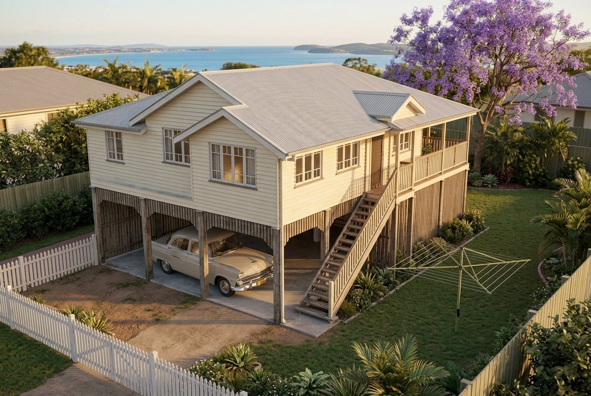
Local vocabularyHighset17 September 2026
What does “highset” mean on a Bayside block?
Brisbane's word for a house lifted off the ground, living upstairs, space below. Why the Bayside has so many, when a new house is designed that way, and what it gives you.
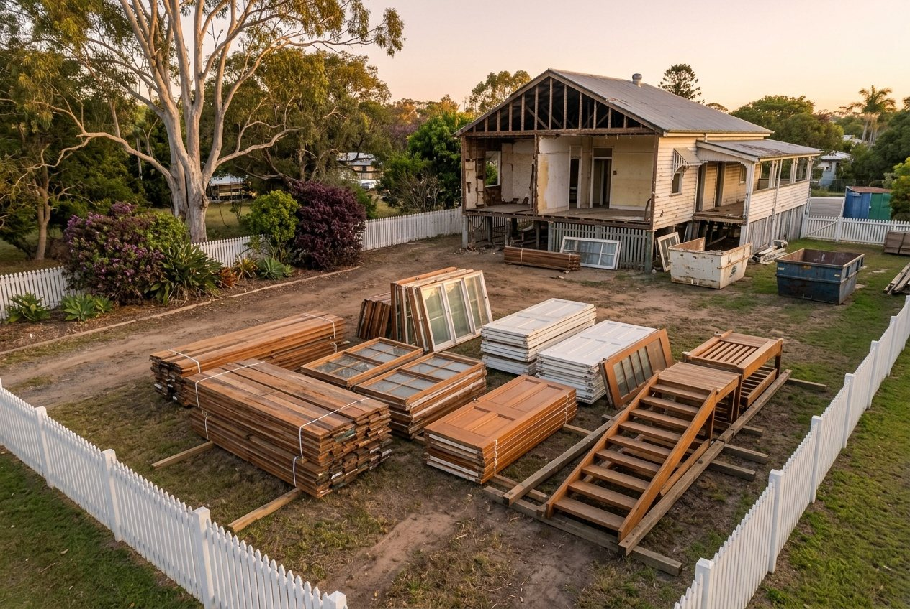
The honest listWhat can be reused17 September 2026
How much of the old house can be reused?
Honestly: very little in the new house, and a fair bit elsewhere. What comes out of an old Bayside house and gets used again, what can't and why, and where the rest goes.
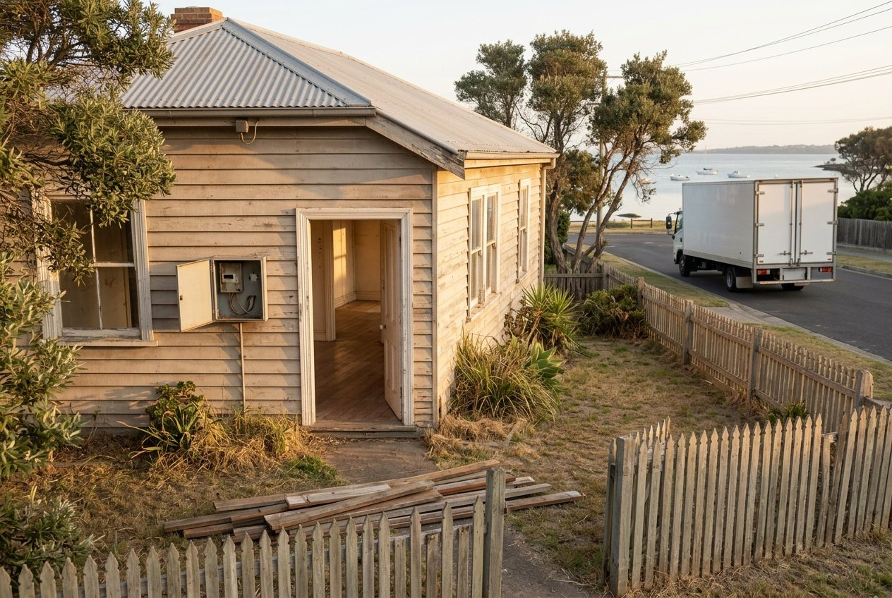
The order things come offMoving out17 September 2026
Do we need to move out before demolition, and when do the services get cut?
Yes, and earlier than most people plan. The order the power, water, sewer, gas and internet come off, who arranges each, and the rule that stops demolition until Energex confirms in writing.
 The two listsRebuild or move?
The two listsRebuild or move?
17 September 2026
Knockdown rebuild vs buying a new house: which actually costs less?
No number, because nobody honest has one for your family. The factors that decide it, on both sides, so you can run the comparison with your own figures and your own street.
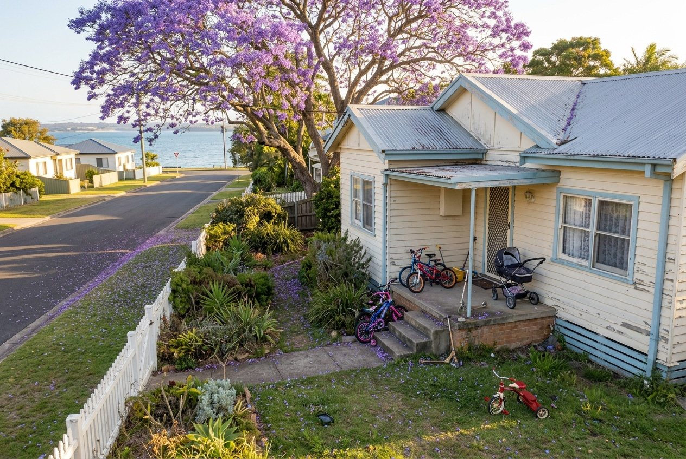
All six options, honestlyOutgrown the house17 September 2026
We've outgrown the house but we love the street. What are the options?
All six, honestly: extend, raise and build under, renovate, knock down and rebuild, add a secondary dwelling, or move. What each suits, what rules it, and how to tell which is yours.
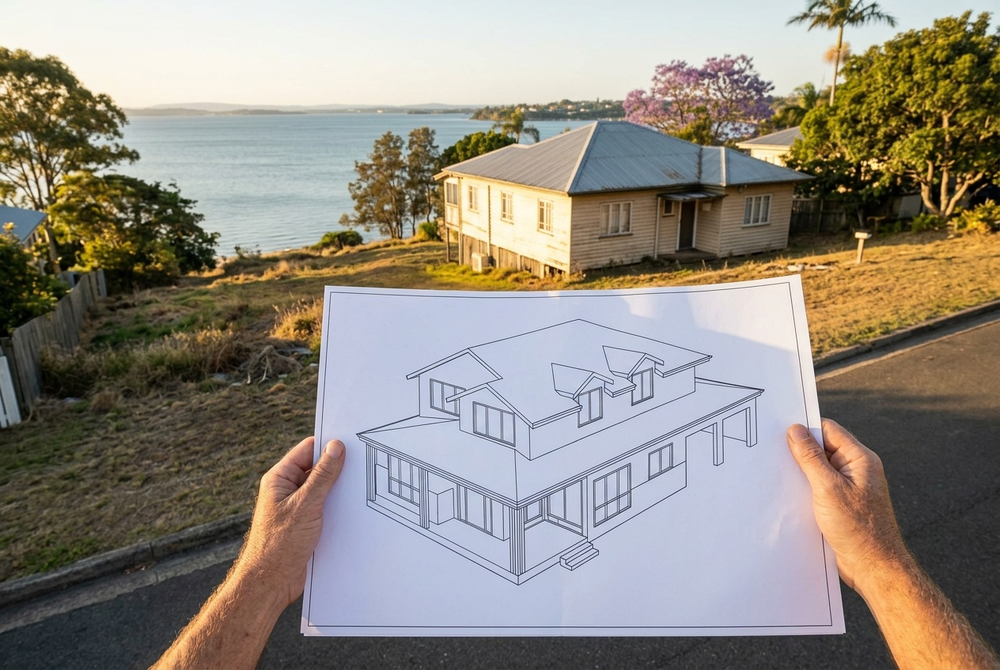
Knockdown rebuildThe package10 September 2026
What is a knockdown rebuild package, and is it the right way to build?
What's usually bundled into an advertised package, who they suit, where they stop suiting people, and the six questions worth asking any builder.
 Five things to know firstWynnum & Manly
Five things to know firstWynnum & Manly
8 September 2026
Thinking of rebuilding in Wynnum or Manly? Five things to know first
The pre-1947 rule, what the block decides, where you live while it happens, and how to check your own house in five minutes.
The Bayside suburbs
Wynnum, Manly, Lota, Manly West, Wakerley, Gumdale, Ransome and Tingalpa — honest portraits, with the census numbers, from a builder who works in all of them.
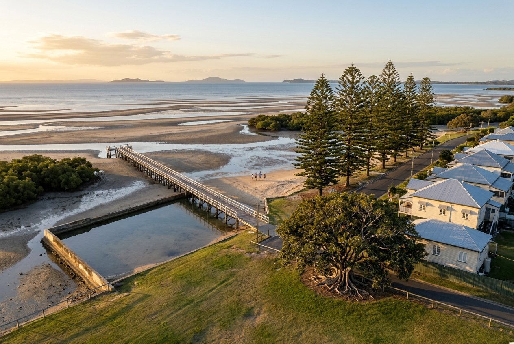
The Bayside suburbsWynnum17 September 2026
Is Wynnum a good place to live? An honest look at the good and the annoying
The water, the train, the village and the schools; the tide, the salt, the storms and the seventy-year-old houses. Written by a builder, not an agent.
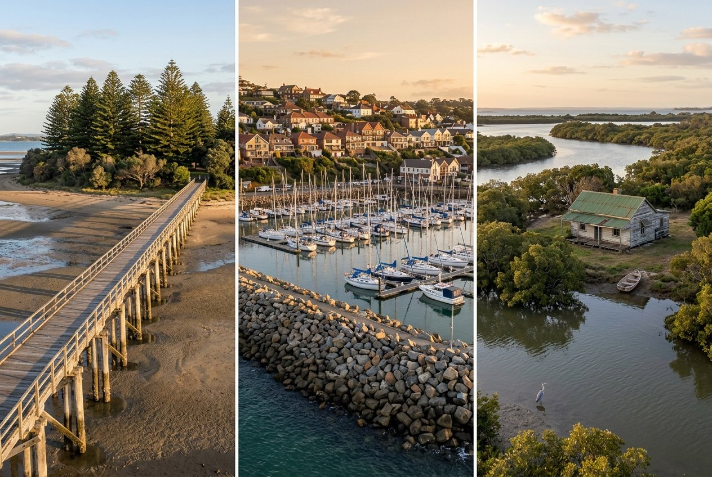
Which suits which familyWynnum · Manly · Lota17 September 2026
Wynnum vs Manly vs Lota: which Bayside suburb suits which family?
Three suburbs, one bay, three different feels. The census numbers side by side, the train, the harbour, the schools, and what the houses are like in each.
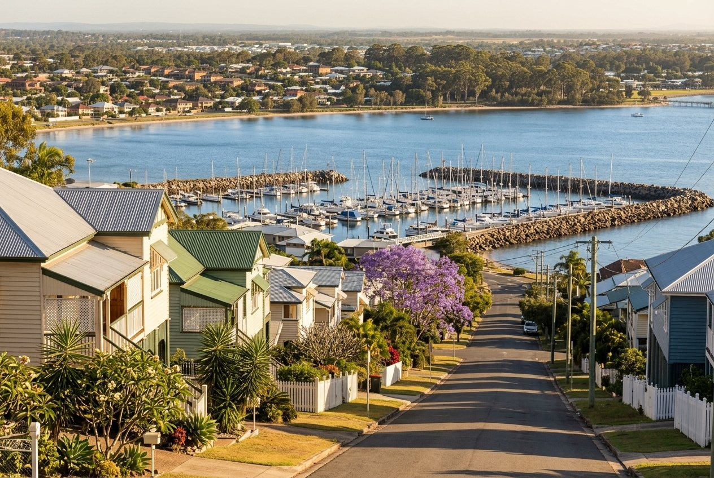
One suburb until 1975Manly or Manly West17 September 2026
What's the difference between Manly and Manly West?
Manly is the harbour suburb of 4,273 people; Manly West is the inland one of 12,436, split off in 1975. Different age, housing, schools, and a different block to build on.
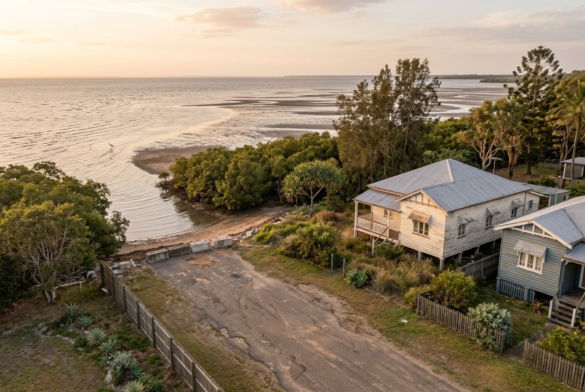
The Bayside suburbsLota17 September 2026
Lota: the quiet one between Wynnum and Manly
3,518 people, 95% separate houses, nearly half the families with kids at home. Its history, its one school and its station, and what its post-war houses are like to change.
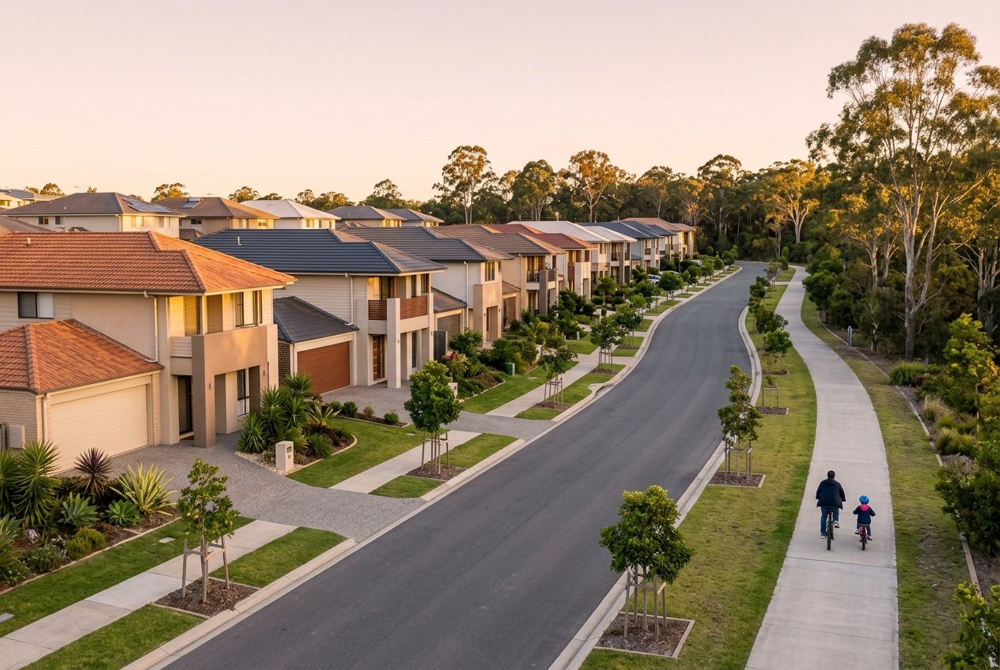
The newer BaysideWakerley & Gumdale17 September 2026
Wakerley and Gumdale: the newer Bayside, and what you give up for it
Wakerley is the estate suburb, Gumdale the acreage one. Newer houses, bigger blocks, no state school in Wakerley, no train, no water at the end of the street. The honest trade.
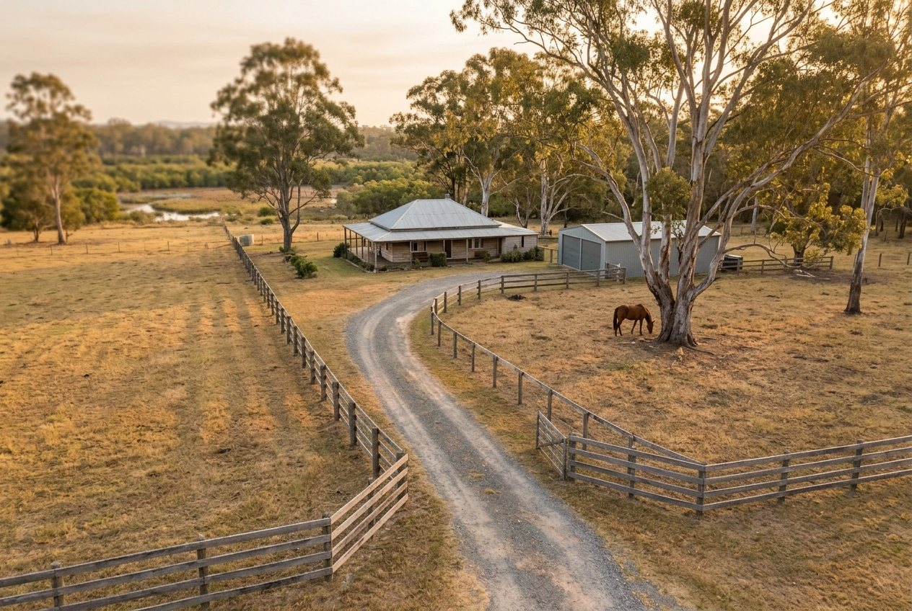
The acreage edgeRansome · Tingalpa · Gumdale17 September 2026
Ransome, Tingalpa and Gumdale: the acreage edge of the Bayside
Where the Bayside stops being suburbs. Ransome (Sabre's home, 429 people), Tingalpa's post-war streets, and Gumdale's acreages. What each is, and what gets built there.
Living on the Bayside
Schools and catchments, the train, the weekends, the flood maps and the storm season. The things families weigh up before they decide to stay.
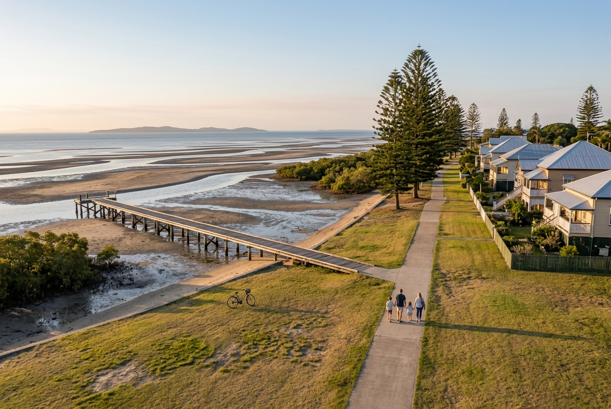
The honest guideLiving on the Bayside23 September 2026
Living on Brisbane's Bayside: an honest guide to Wynnum, Manly, Lota and the suburbs around them
The suburbs one by one, the schools, the train, the tide, the storms, and the houses, honestly and including the annoying parts. Start here.
 Catchments, in plain wordsBayside schools
Catchments, in plain wordsBayside schools
17 September 2026
Schools on the Bayside: the catchments, and what “in catchment” is worth
How Queensland state school catchments work, how to check yours on EdMap, where the Bayside schools are, and why catchment is the reason so many families rebuild instead of moving.
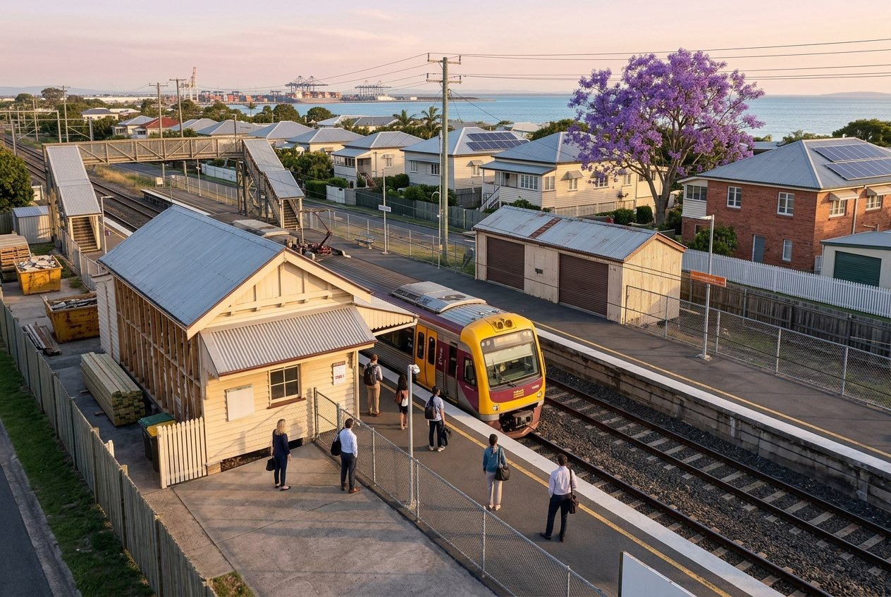
By train and by roadWynnum to the city17 September 2026
How far is Wynnum from Brisbane CBD, really? Train, car, peak hour
About 20 km by road, 22 km by rail, 40 minutes on a real midday train. What decides the car time, and why it's a question about where you live, not where you work.
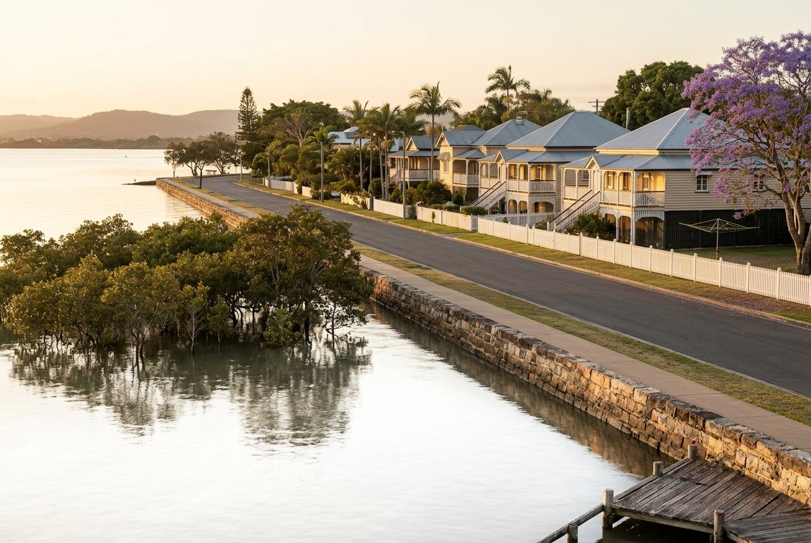
Reading council's mapDoes Wynnum flood?17 September 2026
Does Wynnum flood? What the council maps actually show
Not from the river. Storm tide, creeks and overland flow, mapped lot by lot. How to read council's Flood Awareness Map and FloodWise report for your address, without the panic.
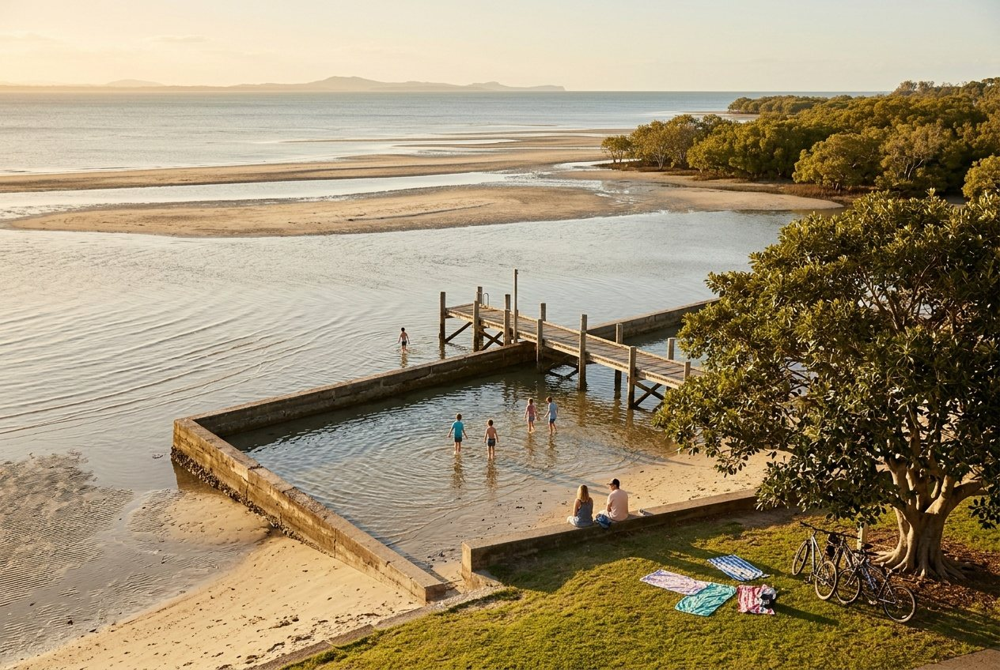
Wynnum & ManlyWith kids17 September 2026
What is there to do in Wynnum and Manly with kids?
The wading pool, the jetty, Pandanus Beach, sixteen kilometres of parklands, the harbour, the train. A local's list, and why those families end up rebuilding rather than leaving.
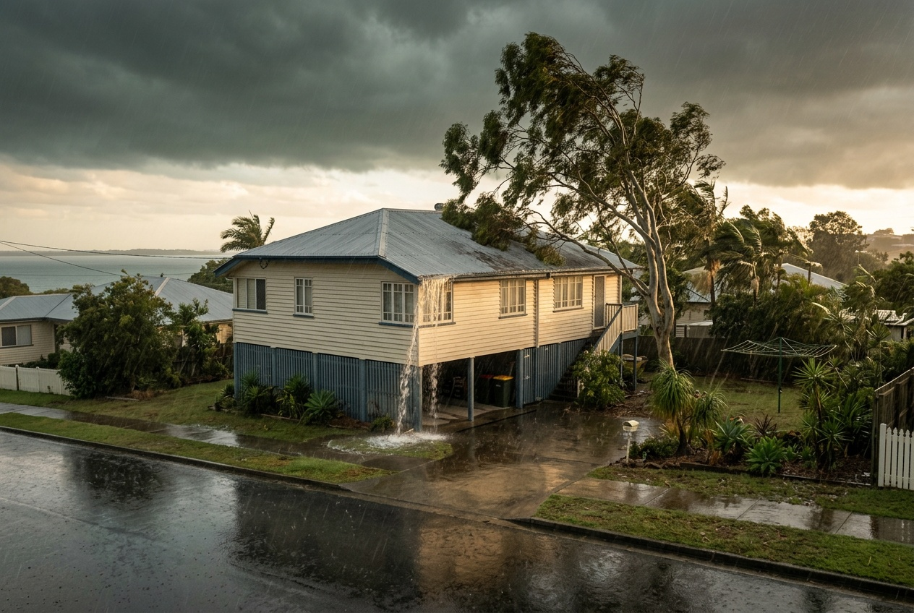
October to MarchStorm season17 September 2026
Bayside storm season: what it means for your roof, your trees and your insurance
October to March, every year. What Get Ready Queensland says to check before it starts, what a builder looks at on an old Bayside house, and why the storm is the first honest look at the roof.
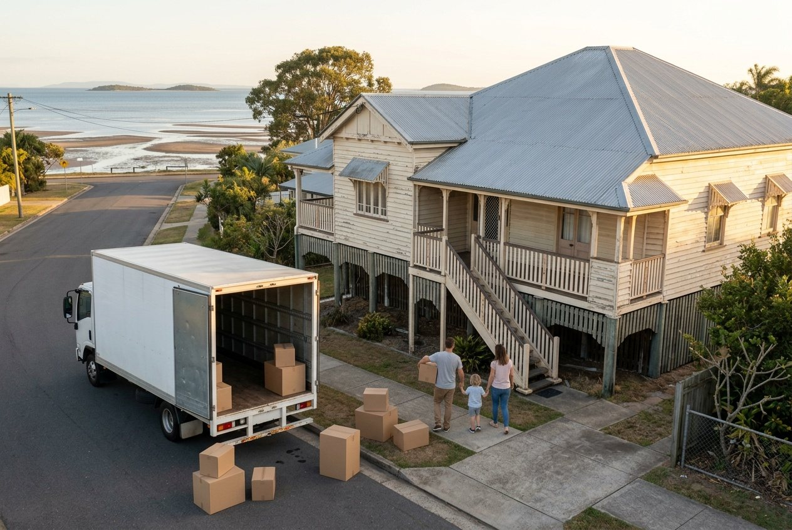
What nobody tells youMoving here17 September 2026
Moving to Brisbane's Bayside from interstate: what nobody tells you
The humidity, the tide, the storm season, the train, the catchments, the word ‘highset’, and what a seventy-year-old timber house is really like to live in.
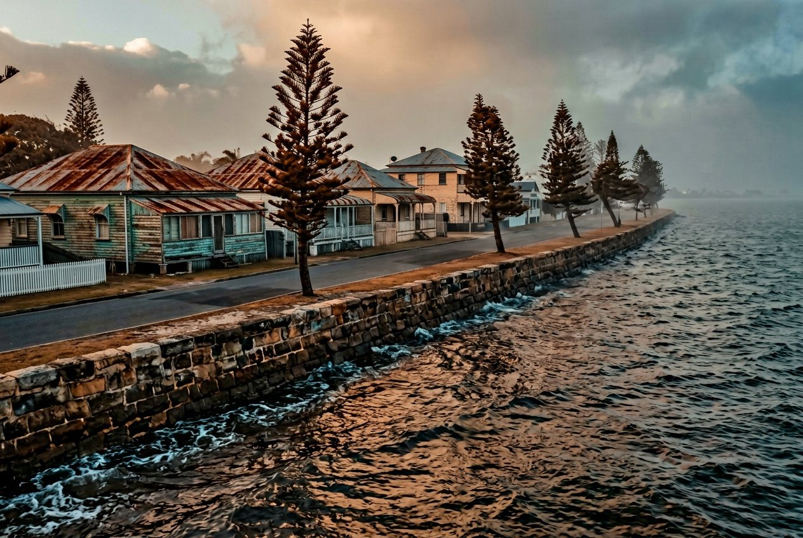
Salt, wind, tideLiving on the foreshore17 September 2026
What is the Wynnum–Manly foreshore actually like to live near?
The salt, the wind, the tide going out, the king tides, the storm-tide overlay, and what all of it does to a house over twenty years. A builder's honest account.
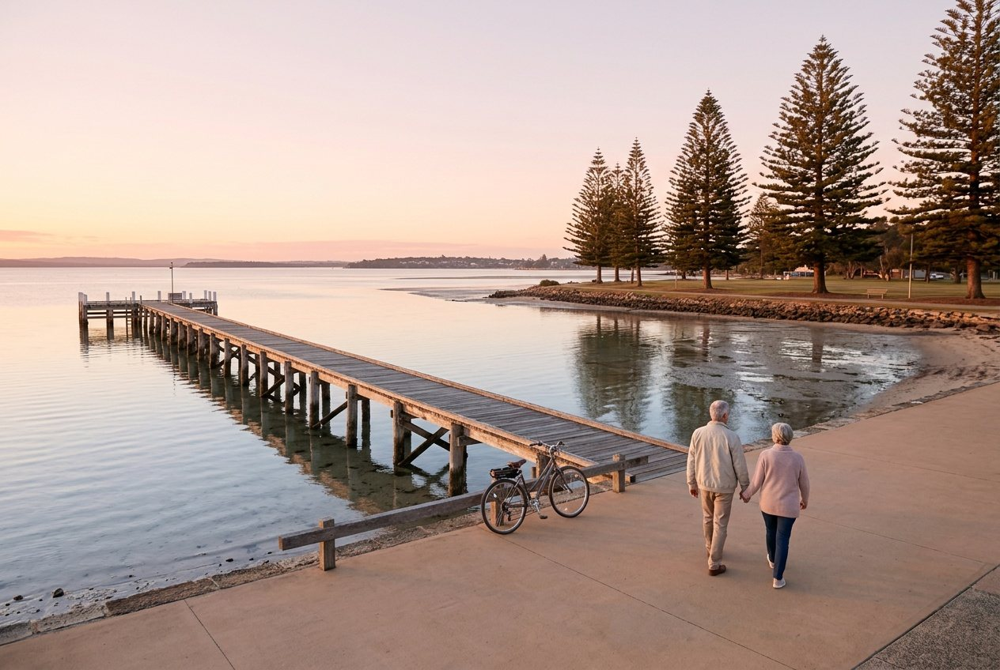
Stay on the streetRetiring here17 September 2026
Is the Bayside a good place to retire, and should you stay in the house?
Why so many do, and the honest question underneath: whether the highset with the stairs is the house to grow old in. Queensland's new livable housing standard, and the options for staying on the street.
Dealing with a builder
The QBCC, the licence, the warranty, and what “small independent builder” actually means. The checks that work on any builder, including us.
 The whole checklistChoosing a builder
The whole checklistChoosing a builder
23 September 2026
How to choose a builder in Queensland: the whole checklist, in plain words
The licence, the quote, the contract, the deposit, the insurance, the inspections and the defects, in the order you'll need them. Start here.
 Dealing with a builderThe QBCC check
Dealing with a builderThe QBCC check
17 September 2026
What is the QBCC, and what should you check on a builder's licence?
The regulator, the public register and the Home Warranty Scheme, in plain words. How to look any builder up in five minutes — including us.
 Dealing with a builderSmall builders
Dealing with a builderSmall builders
17 September 2026
Who are the small independent builders on Brisbane's Bayside?
What the words actually mean, how to find the builders near Wynnum and Manly who fit them, the checks that work on any of us, and where Sabre sits.
 The QBCC's own wordsFixed price or cost-plus
The QBCC's own wordsFixed price or cost-plus
17 September 2026
Fixed price or cost-plus: what do builders mean, and which protects you?
The two ways a contract can set the price, in the regulator's own words. What each shifts onto you, why the QBCC warns about cost-plus, and what to check before you sign.
 Fifteen questionsBefore you sign
Fifteen questionsBefore you sign
17 September 2026
What questions should we ask a builder before we sign?
Fifteen questions, most from the QBCC's own checklist: the licence, the contract type, the allowances, the deposit, the dates, the cooling-off, the variations, the warranty, and who you'll talk to in month four.
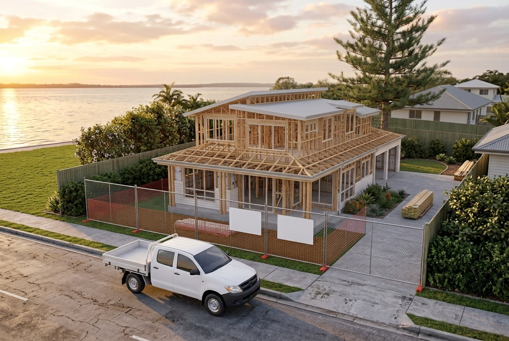
The logo on the uteMaster Builders17 September 2026
What does Master Builders membership actually mean for you?
Less than the logo suggests and more than nothing. What the association is, what a member has agreed to, what it is not, and how to check a builder's membership yourself.
 The rules, in plain wordsProgress payments
The rules, in plain wordsProgress payments
17 September 2026
Progress payments: what you pay, and when, on a Queensland house build
Deposit limits, claims that must match work on site, the commencement notice, practical completion, and the QBCC's warning that paying early cuts your Home Warranty protection.
 In writing, before the workVariations
In writing, before the workVariations
17 September 2026
Variations: why the price changed, and when it shouldn't have
The rule is short: in writing, agreed by you, before the work starts. What the document must contain, the urgent exception, when a change is the builder's cost, and how to keep them down.
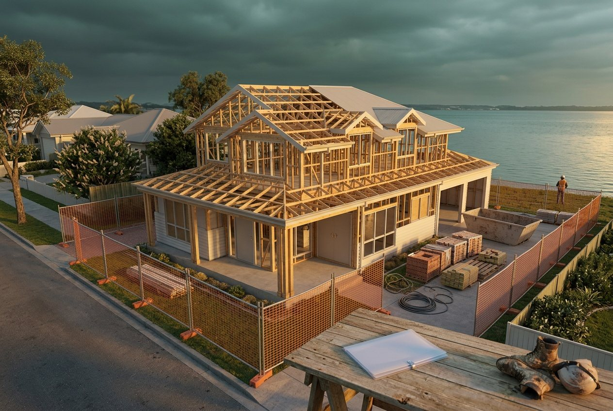
Four kinds, one protects youThe builder's insurance17 September 2026
What insurance should a builder have, and what does it cover you for?
Four kinds. The Queensland Home Warranty Scheme protects you; contract works, public liability and workers' comp protect the house, the neighbours and the workers. What each covers and what to ask to see.
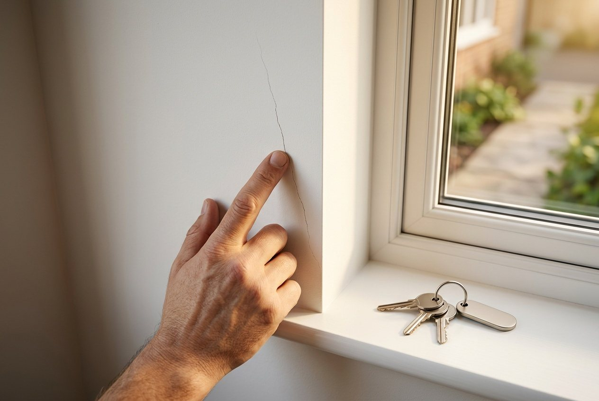
Three clocks, not oneDefects period17 September 2026
What is a defects liability period, and what protects you after it?
Three layers: the defects period in your contract, the statutory warranties in the QBCC Act, and the Home Warranty Scheme's windows. What each does, when each ends, and what to do when you notice a crack.
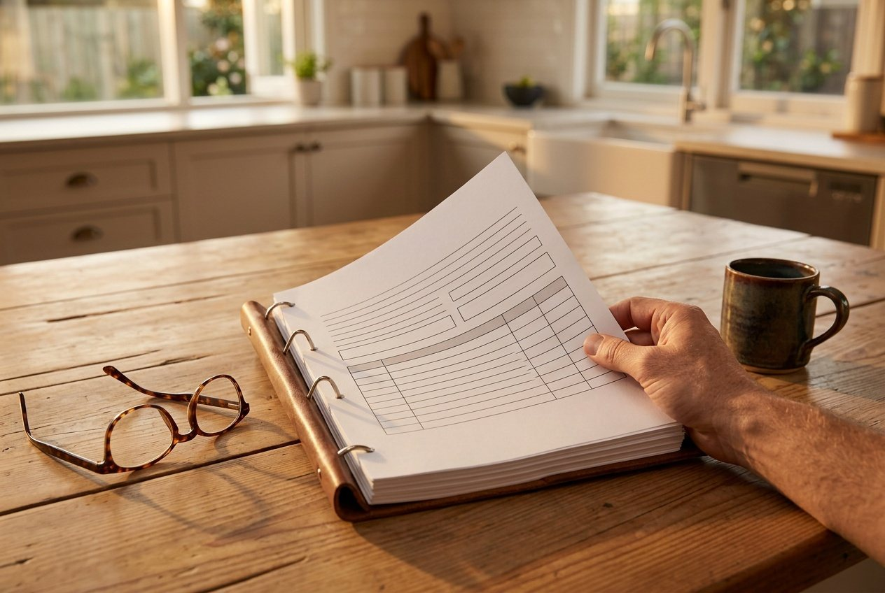
The skeleton every form sharesThe contract17 September 2026
What's in a Queensland building contract, in plain English?
QBCC, HIA and Master Builders forms all share one skeleton because the law requires it: schedule, general conditions, plans and specs, and the clauses on price, dates, payments, variations, completion and defects.
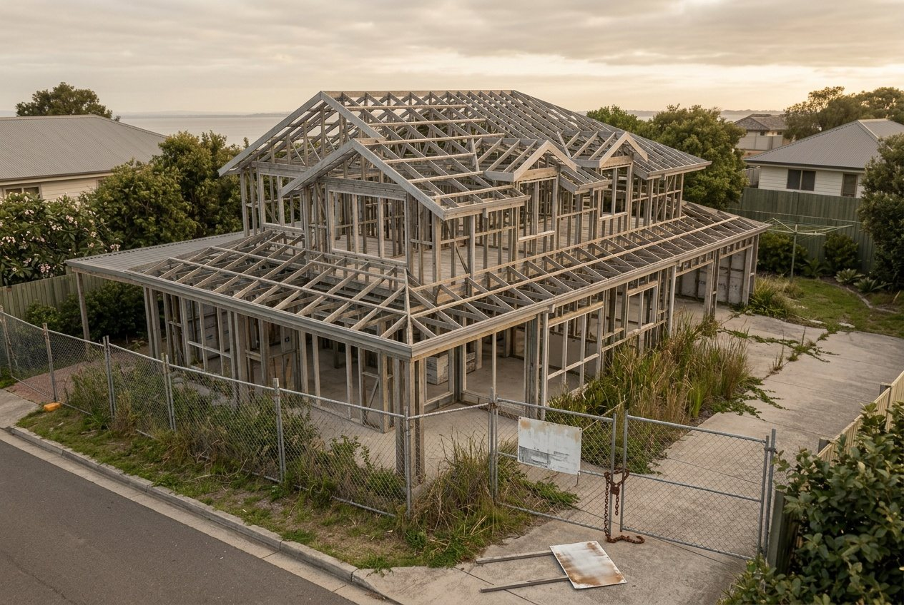
The fear behind every questionIf the builder goes under17 September 2026
What happens if a builder goes under mid-build?
The Home Warranty Scheme's non-completion cover: when it applies, the three-month window, what it pays, and the two things that shrink it before you ever need it.
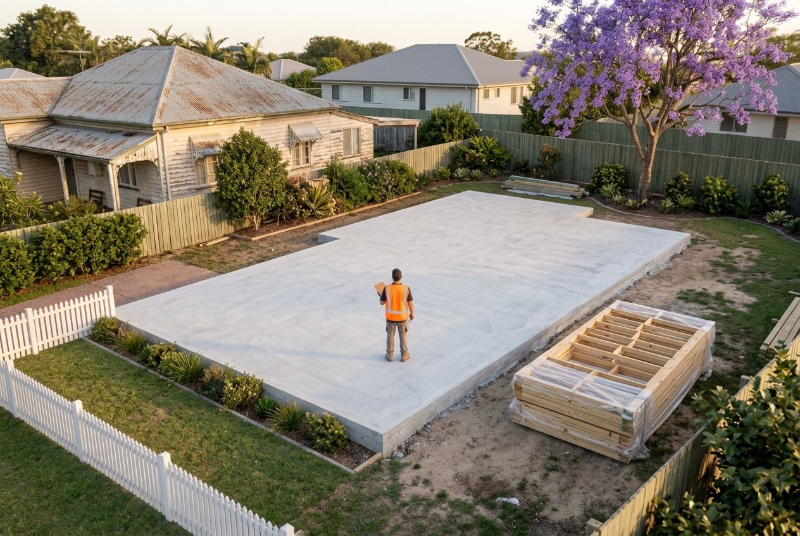
The honest versionOwner-builder?17 September 2026
Should we be an owner-builder in Queensland?
Maybe, and here's the honest version from a builder who'd lose the job. The permit, the course, what you take on, why Home Warranty doesn't cover you, and the six-year rule when you sell.
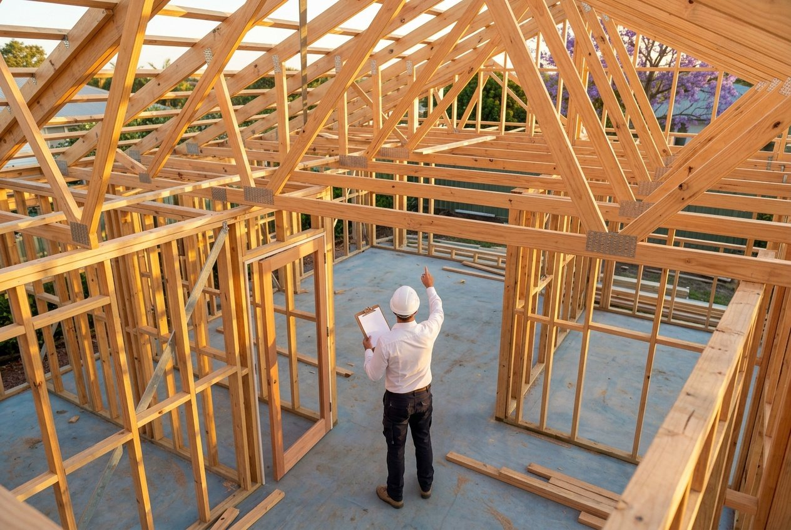
Five sign-offsThe certifier17 September 2026
How do progress inspections and certifiers work in Queensland?
A private building certifier approves the plans and inspects at the mandatory stages: excavation, footings, slab, frame and final. Who engages them, what each stage checks, and the paperwork you can ask for.
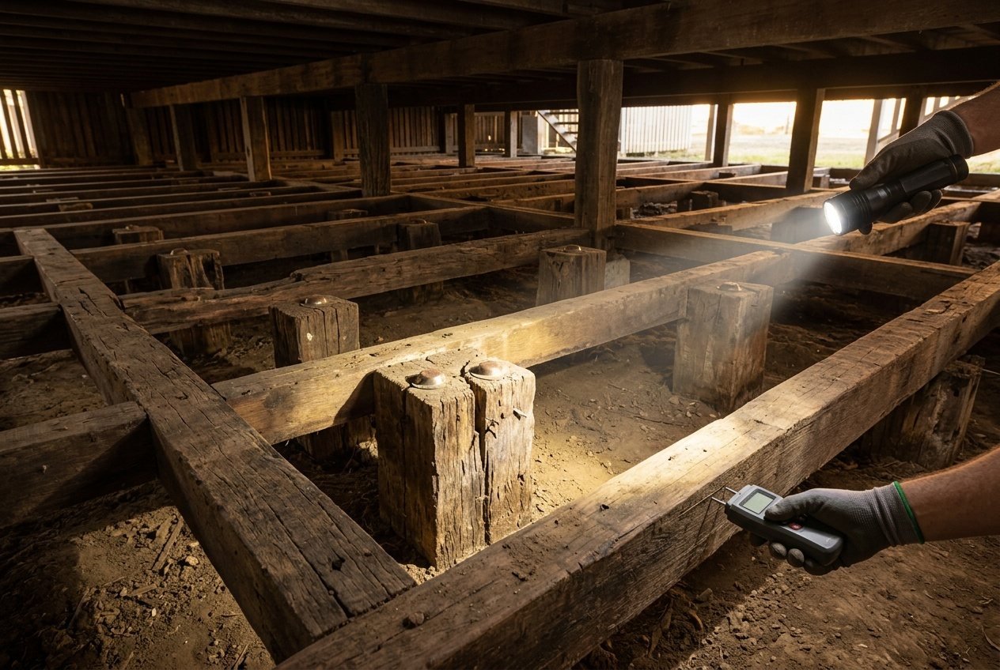
The house or the block?Building and pest17 September 2026
What is a building and pest inspection worth on a house you plan to knock down?
Less than you'd think for the house, more for the block. What a standard inspection is written for, what it tells a family who's demolishing anyway, and the four checks that matter more.
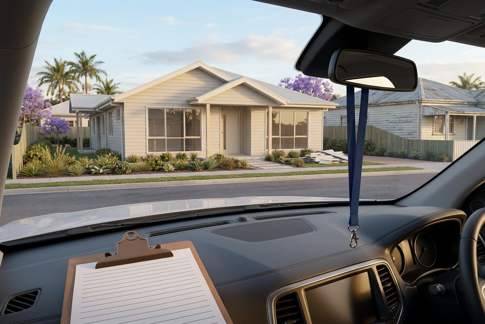
The shape of it, not adviceThe construction loan17 September 2026
Can you get a construction loan for a knockdown rebuild?
Generally yes. The shape of one, not advice: staged payments to the builder, the lender's valuer at each stage, the loan sized on land plus finished house, and what that means for your contract.
 Compare like with likeThe quote
Compare like with likeThe quote
17 September 2026
What should be in a builder's quote, line by line?
The lines a complete knockdown rebuild quote carries, from asbestos and demolition through the slab, frame, fit-out and driveway, to allowances, the certifier, the Home Warranty premium and GST. And the three places a quote is usually thin.
Where most families start
A walk through your house with Nathan.
Room by room, with the builder who'd build the next one. No obligation, and no need to know what you want yet. He'll ring to set a time that suits the family.
Book your walk-through with Nathan Call 0422 831 306
Already thinking about a rebuild? The free block check is on the same page.